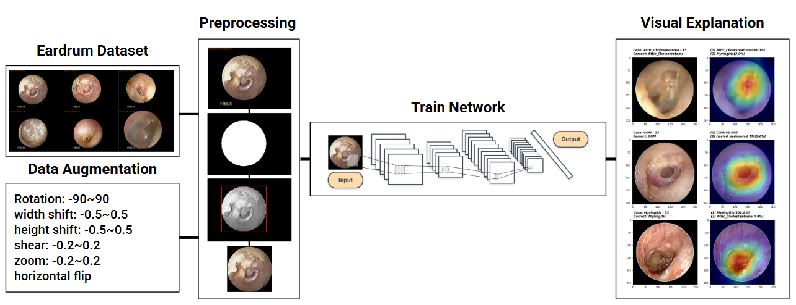

Tympanic Membrane Endoscopy Image Classification
고막 내시경 이미지의 병변을 자동 분류하는 앙상블 딥러닝 모델. VGG16, ResNet, DenseNet, EfficientNet 앙상블로 95.8% 정확도를 달성하고 Grad-CAM 활성화 맵으로 임상가 대상 검증 UI를 설계. PLOS ONE 게재 (Choi et al., 2022).
Skills & Technologies
Overview
7,156장의 중이염 정상 및 질환 내시경 이미지를 전처리하고, 4개 CNN 모델에 전이학습을 적용한 뒤 앙상블로 다중 분류하며, Grad-CAM으로 판단 근거를 시각화해 전문의가 검토할 수 있도록 구성했습니다.

Problem
중이염은 내시경으로 고막 상태를 보고 진단하는데, 판독이 의료진의 경험에 크게 의존합니다. 내시경 이미지만으로 정상 여부와 중이염 1차/2차 질환 유형을 자동 분류해 진료 판단을 보조하고자 했습니다.
Solution
전처리: MATLAB 및 Python의 NumPy, scikit-image, OpenCV 라이브러리로 원본 이미지를 모델 입력 형태에 맞는 부동 소수형 텐서로 변환했습니다. 클래스 불균형은 언더샘플링과 데이터 증강(flip/rotation/shift)으로 보정했습니다.
모델: VGG16, ResNet, DenseNet, EfficientNet 등의 CNN 모델에 Transfer Learning을 적용해 학습하고, 4개 모델을 앙상블했습니다.
해석: Grad-CAM 기반 softmax 확률 및 activation map 시각화 UI를 구성해 전문의가 판단 근거를 확인하고 레이블을 재검토할 수 있도록 했습니다. 결과 분석에는 Matplotlib, seaborn을 활용했습니다.
Publication
Choi Y., Chae J., Park K., Hur J., Kweon J., Ahn J. (2022). Automated multi-class classification for prediction of tympanic membrane changes with deep learning models. PLOS ONE. [SCIE]
Key Achievements
- 다중 분류 정확도 95.8% 달성 (4-모델 앙상블)
- Grad-CAM 기반 임상 해석 가능성 UI 설계
- PLOS ONE 게재 (SCIE)